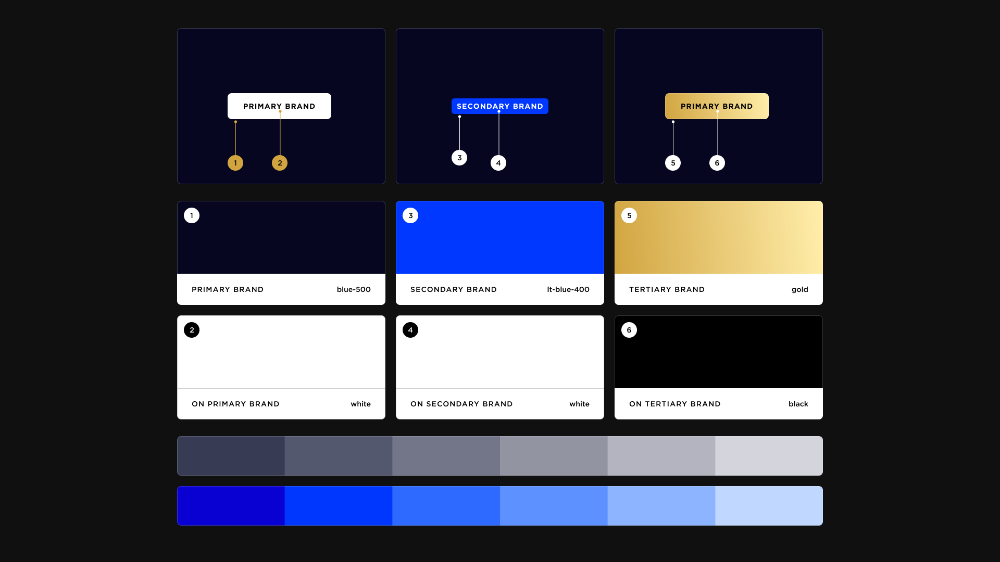
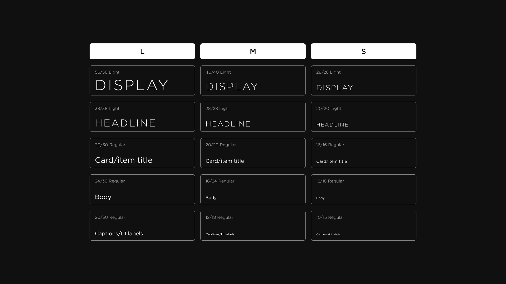
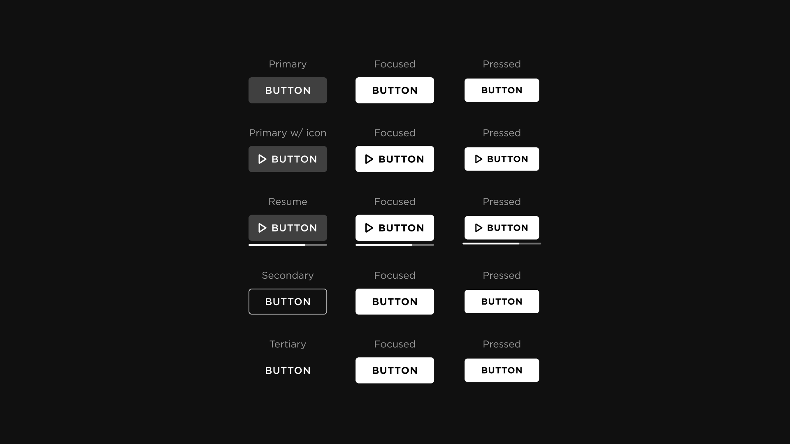
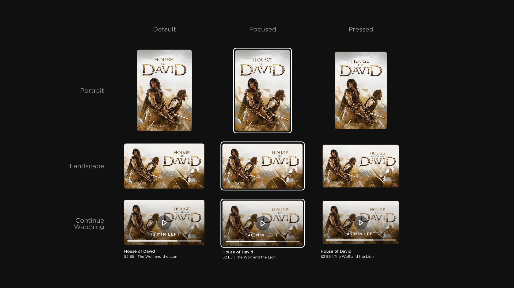
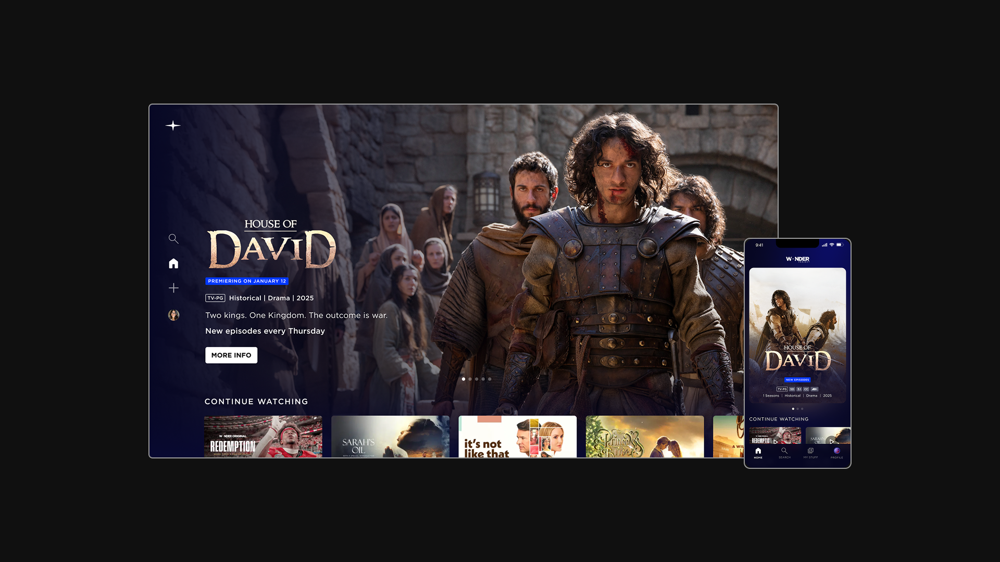

Sole in-house designer for an early-stage D2C streaming startup — rebuilt the cross-platform product experience from vendor-delivered foundations, launched a new marketing web presence, and established the design infrastructure for a future product rollout.
role
Head of Design
timeline
18 Months
context
D2C Streaming App & Marketing Web
responsibilities
Cross-Platform Product Design, Design System, UX Architecture, Marketing Design, CMS Strategy, Team Building
the challenge
Wonder Project is a Los Angeles-based streaming startup building a D2C platform for independent film and premium content. When I joined as a freelance design consultant, the product had been designed primarily by third-party agency vendors — none of whom had experience designing for 10-foot TV platforms. The result was a set of designs that looked reasonable on paper but wouldn't function as a real, shippable product across mobile, web, and connected TV.
My initial mandate was clear: take over and rebuild the experience from the ground up with the cross-platform rigor the product actually needed.
my role
I was brought in initially as a part-time freelance consultant while still based in Berlin. When the scope of the work became clear, I was brought on full-time as Head of Design and relocated to Los Angeles.
As the sole in-house designer, I owned the end-to-end product design across all surfaces — and over time, expanded scope to include marketing, brand, and web.
my role
- Audited and rebuilt vendor-delivered designs for 10-foot TV, mobile, and web — replacing patterns that wouldn't survive production with a platform-appropriate, technically grounded system.
- Designed core product flows including Sign Up, Settings, Home, Downloads, Watchlist, Search, Title Detail (More Info), and Video Player.
- Unified icon language across all surfaces by establishing Material Icons as the system standard, eliminating cross-vendor inconsistencies.
- Onboarded and mentored a part-time junior designer to independently own the Prime Video Channel experience, fully freeing my bandwidth for platform-level priorities.
- Partnered with Product and Engineering to evaluate and implement a headless CMS, enabling the non-technical Marketing team to build and manage pages independently.
- Designed and launched a new Marketing Landing Page and led the full redesign of the company website — now live across Home, Browse, Studio, About, and Shop.
the scope
The product covered five distinct surfaces requiring design decisions in parallel:
-
ios & android
Mobile and tablet, including phone-optimized and tablet-adaptive layouts.
-
responsive web
Desktop and mobile web, with a shared component library bridging to the marketing site, and A CMS-powered site designed for longevity and non-designer maintainability
-
10-foot tv (ctv)
The most technically constrained surface — rebuilt entirely from vendor foundations with platform-appropriate patterns.
-
prime video channel
A distinct product surface within Amazon's ecosystem, eventually handed off to a dedicated junior designer.
the design system
With five distinct surfaces to design for simultaneously, a coherent system was the only way to maintain consistency and move at speed as a team of one. The system covers color, typography, iconography, and a full component library with platform-specific variants for mobile, web, and 10-foot TV.





the outcome
The D2C streaming app reached feature-complete fidelity across all five surfaces. The design system, component library, and UX architecture are production-ready.
The marketing website — designed and launched during the final phase of my tenure — is live. It reflects the same visual system as the D2C product and was built on a CMS infrastructure that allows the Marketing team to operate independently.